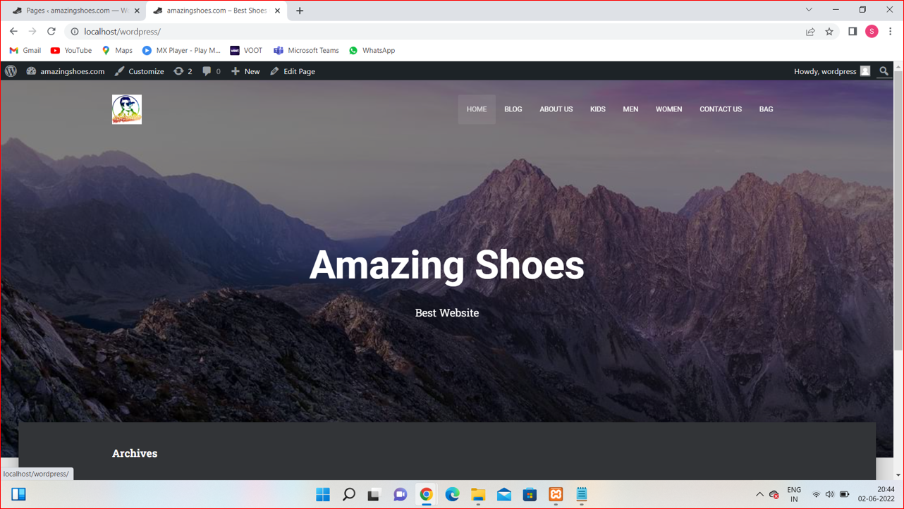
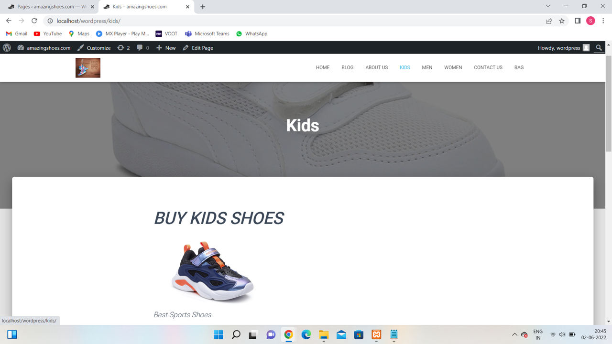
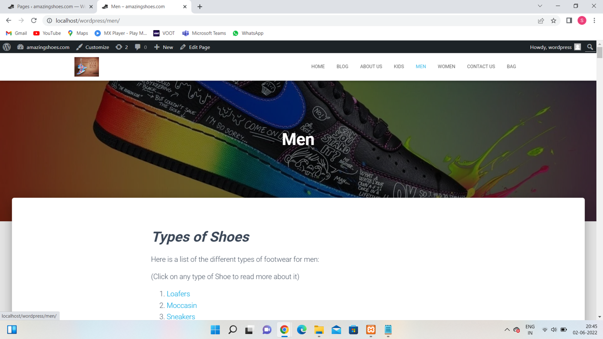
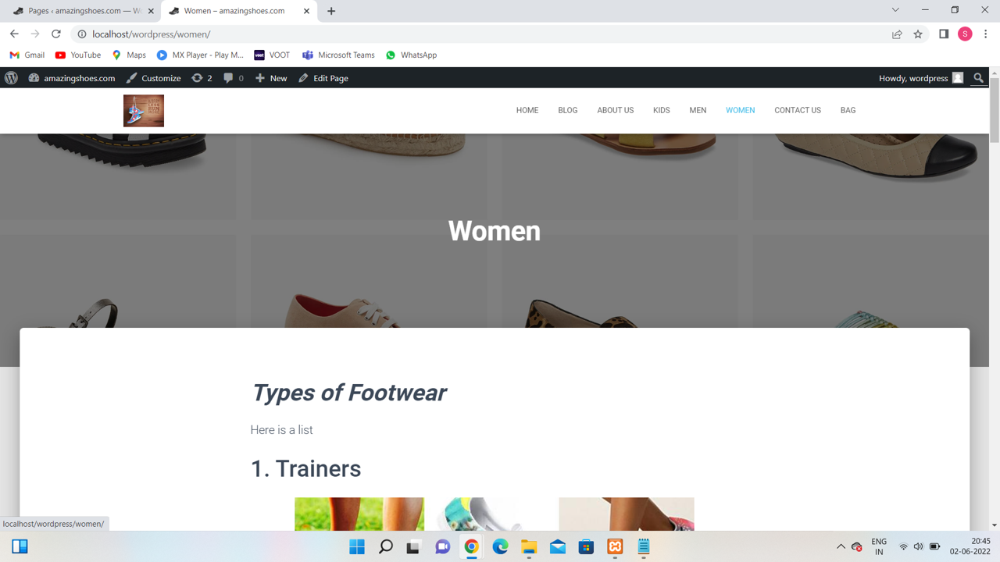
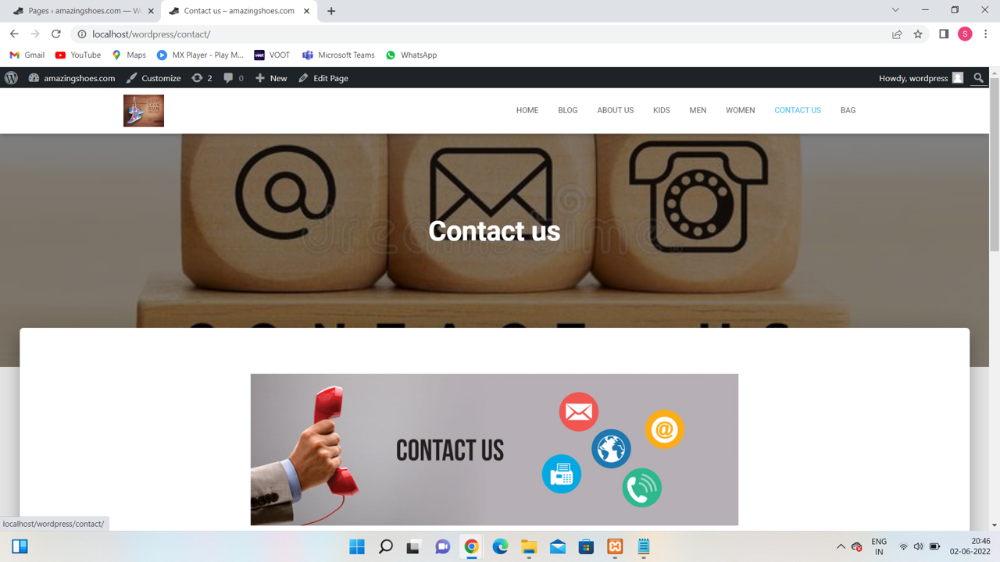
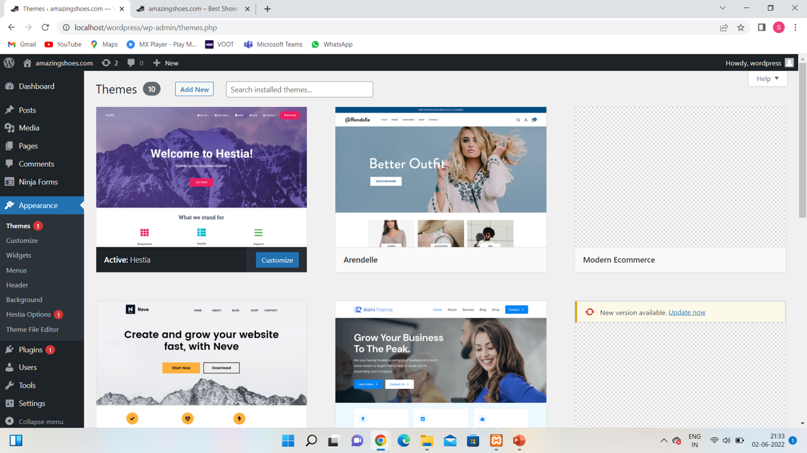

Online Shoe Store Website
Project Overview
This project involved creating a fully functional, responsive WordPress website for an online shoe store. The site was designed to showcase stylish footwear and provide users with an easy-to-navigate shopping experience.
Tools Used: WordPress, Elementor
Role: Web Designer & Site Administrator

Goal
The objective was to create a clean and modern e-commerce layout that:
- Highlights the variety of shoe brands and styles
- Provides a clear path to purchase
- Ensures the site is visually appealing, responsive, and user-friendly



Design & Features
Key components of the website included:
- Homepage with strong visuals and product CTAs
- Shop section with categorized footwear listings
- Search and filter functionality

Customization
- Used Elementor for drag-and-drop editing
- Integrated payment methods and product variations
- Customized the theme to match brand identity
- Added plugins for SEO, performance, and responsiveness

Results & Learnings
- Theme customization and plugin integration
- Structuring an e-commerce site with UX best practices
- Using WordPress as a scalable and client-friendly CMS
Summary
| Area | Detail |
| Client Type | E-commerce (Footwear) |
| Platform | WordPress |
| Tools Used | Elementor |
| Custom Work | Product filters, homepage layout, custom branding |
| Learning Outcome | Hands-on WordPress CMS experience with real-world use case |
⬅ Back to Portfolio